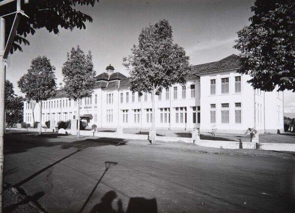

Sejarah SMA Negeri 3 Bandung
Berdiri sejak tahun 1953, SMA Negeri 3 Bandung dikenal dengan sebutan SMA Belitung Barat karena berlokasi di Jalan Belitung No. 8 Bandung dan menempati sebelah barat gedung tersebut. Sekolah ini merupakan SMA Negeri unggulan pertama di Bandung, kemudian SMA Negeri 8 dan SMA Negeri 5 Bandung menempati urutan ke‑2 dan ke‑3. Lulusan dari sekolah ini banyak yang berhasil melanjutkan ke perguruan tinggi terkemuka di Indonesia.
Bangunan sekolah ini merupakan gedung tua yang dibangun pada zaman pemerintahan Hindia Belanda, dirancang oleh arsitek Charles Prosper Wolff Schoemaker, yang berfungsi sebagai gedung Hoogere Burgerschool te Bandoeng (HBS) yaitu sekolah menengah untuk bangsa Belanda dan kalangan ningrat Indonesia (sekolah setaraf gabungan SMP (MULO) dan SMA (AMS) dengan masa studi 5 tahun).
Gedung ini berdiri di atas tanah seluas ± 14.240 m² dengan luas bangunan ± 8.220 m² menghadap ke utara (Jalan Belitung). Gedung tersebut dihuni oleh dua sekolah yaitu SMA Negeri 3 Bandung di sebelah barat dan SMA Negeri 5 Bandung di sebelah timur. Batas SMA 3 dan SMA 5 hanya dibatasi oleh jalur koridor tengah yang memanjang dari arah utara ke selatan.
Sejarah dan Fungsi Bangunan
-
Zaman Belanda (1916 – 1942)
Berfungsi sebagai gedung HBS Bandung — sebagai HBS ke‑4 yang didirikan pemerintah kolonial setelah HBS di Jakarta (27 November 1860), Surabaya (November 1875), dan Semarang (1 November 1877).
-
Zaman Jepang (1942 – 1945)
Berfungsi sebagai markas (tangsi/asrama) tentara Jepang (Kempetai).
-
Zaman Peralihan (1947 – 1950)
Pagi hari berfungsi sebagai Sekolah VHO (Voortgezet Hoger Onderwijs) — sekolah setaraf SMA berbahasa Belanda dan sore hari sebagai VHO berbahasa Indonesia. Pada periode itu Bandung dan sekitarnya masih dikuasai NICA sehingga sistem pendidikan masih mengacu pada sistem yang berlaku sebelum pendudukan Jepang. Gedung sekolah tersebut pagi hari digunakan siswa berbangsa Belanda yang waktu itu masih banyak menetap di Bandung, sementara siang‑sore hari digunakan siswa Indonesia.
-
Tahun 1950
VHO berbahasa Indonesia diganti menjadi SMA 1 B/C, sedangkan VHO berbahasa Belanda (eks HBS) menjadi SMA 2 B/C. Sejak pengakuan kedaulatan, sistem pendidikan yang digunakan di sekolah tersebut mengikuti sistem pendidikan Indonesia. Sebagai “tuan rumah baru”, sekolah “sore” (eks VHO Indonesia) mendapat nomor urut 1, sementara “tuan rumah lama”, sekolah “pagi” (eks VHO Belanda – eks HBS) mendapat nomor urut 2.
-
Tahun 1952
Terjadi pemekaran sekolah: SMA 1 B/C menjadi SMA B dan SMA C serta SMA 2 B/C menjadi SMA 2 B. Siswa bagian C dari eks SMA 1 B/C dan SMA 2 B/C digabungkan ke SMA C. Pada pagi hari digunakan untuk SMA 2 B (kelak menjadi SMA Negeri 2 Bandung) dan SMA C (kelak menjadi SMA Negeri 5 Bandung), sedangkan pada sore hari digunakan oleh SMA B (kelak menjadi SMA Negeri 3). Pada bagian lain SMA 3 A/B (eks SMA Parki) juga dimekarkan menjadi SMA 3 B dan SMA 3 A.
-
Tahun 1956
Terjadi perubahan nomenklatur sekolah, SMA B menjadi SMA Negeri III B. Pada bagian lain SMA 2 B menjadi SMA Negeri II B, SMA C menjadi SMA Negeri V C. Sementara itu dua SMA di Jl. Sumatera: SMA 3 B menjadi SMA Negeri IV B, SMA 3 A menjadi SMA Negeri I A. Dengan demikian hingga saat itu terdapat enam SMA Negeri di Bandung.
-
Tahun 1966
Perubahan lokasi dan penataan: SMA Negeri II pindah ke Jalan Cihampelas, dan SMA Negeri VI C yang kelak menjadi SMA Negeri 6 dan SMA Negeri 9 Bandung pindah ke Jalan Pasir Kaliki. SMA Negeri III “pindah” menjadi kelas pagi di Jl. Belitung bersama SMA Negeri V. Pada bagian lain SMA Negeri I dan SMA Negeri IV yang sebelumnya menumpang di Jl. Sumatera/Jl. Jawa mendapat lokasi baru.
-
Tahun 1969
SMA Negeri VI Jl. Belitung 8 diganti menjadi SMA Negeri 8/22; “8” menunjukkan jalan Belitung no 8, sedangkan “22” menunjukkan nomor register sekolah.
-
Tahun 1975
Pada tanggal 10 Oktober 1975 berdasarkan SK Kanwil P & K No. 2553/A/1975, SMA Negeri 8/22 diganti menjadi SMA Negeri IX Bandung. Selanjutnya pada tanggal 9 Desember 1975 dibentuk Koperasi Mekar Sembilan (KMS).
-
Tahun 1984 hingga sekarang
Gedung di Jalan Belitung 8 berfungsi sebagai gedung SMA Negeri 3 Bandung (belakang/sisi barat) dan SMA Negeri 5 Bandung (sisi timur).